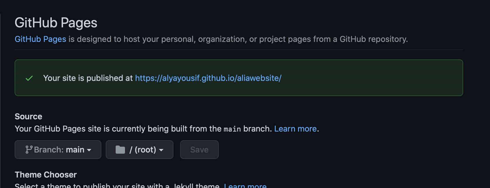

Week 2
Documentation in Github
This week, we learnt how to use the Github website to document our files. Github will be used to document and keep our files in various versions. To control the version of files, we will apply some commands in the terminal.Here are some basic commands:
- ls is used to display all the files and folders.
- cd is used to go to other directories.
- cd- go to previous directory.
- cd~ got home directory
- cd ../ go one level up
- mkdir use to create new folder
Configuring Git
Before configuring Git, We created a repository on our profile which contains all files and history of them. Here are the steps of creating a repository:-
1-Click on the "+" icon of Github and choose new repository
After that, we created a folder using commands to save all documents through the diploma.An image that show all commands used to create folder is shown below.First, we use ls command to list all files and directories.I decided to create a folder in the desktop, cd commaned is used to get to Desktop directory. mkdir commaned is then used to create a folder named myfabacademy on the Desktop.Inside this folder ,a new folder is created .finlly,cd is used to move to aliawebsite directory in order to start configuring.
for configuring Git, you need to know the name of your account and email you register in Github.The two images below shows two commands needed to configure the Git in your laptop:
Configuring Git username

Configuring Git email
Generating ssh key
The ssh key is generate it so every time we connect to Github no username and password is asked. To generate ssh, we open the terminal and write the below command :
After writing the command, a hidden file with the key is created inside the folder.To connect the ssh to Github I followed this steps:
1-Open TextEdit and go to the folder you saved the ssh file.
2- Press cmd + shift + "." to show the ssh hidden file.
3-open id_rsa.pub file and copy all the text.
4-Go to Github->setting->SSH and GPG keys->New key
5-Paste the text and click on Add key
Cloning Github Project
The project is cloned to Github so that we can easily push our file to the repository. To do so I followed these steps:
1-Go to my repository -> Code -> ssh and copy the text.
2-open terminal and go to the folder that we will save our project.
3-Use git clone commnad and paste the ssh clone.
Pushing in Github
Pushing in Github means to upload the project files in the Github repository.To do so we learned some basics command:-
- git status : used to know the status of the working directory
- git add . : to add all files , to add specific file write the name of the file.
- git commit -m " ": to commit on the changes happens on the files
Hosting sites in Github
here are the steps of publising a website in Github:
1-Copy the website file in to the folder we saved our project
2-Open terminal and go to the folder you save your project
3- Add all files using "git add." command
4-commit a changes using "git commit -m" command, message is added to distinguish between the files.
5-push the files to Github using "git push" command.
Here you can see that all files are uploaded in the repository
6- Go to repository settings -> page section.
7- Change None to main and click on save.
8-After clicking on save , the website link will appear above
